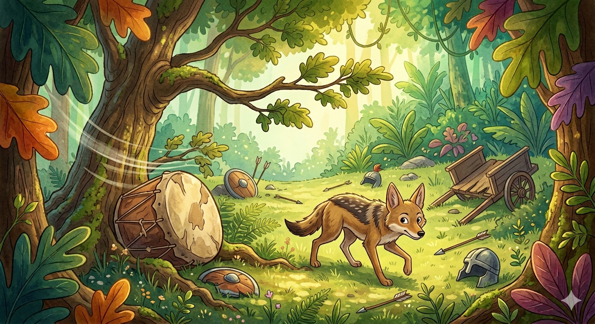

One day, a jackal called Gomaya was very hungry, and was wandering about in search of food.
After some time, he wandered out of the jungle he lived in, and reached a deserted battlefield. In this deserted battlefield, a battle was fought recently. The fighting armies had left behind a drum, which was lying near a tree. As strong winds blew, the branches of the tree got rubbed against the drum. This made a strange noise. When the jackal heard this sound, he got very frightened and thought of running away, "If I cannot flee from here before I am seen by the person making all this noise, I will be in trouble".
As he was about to run away, he had a second thought. "It is unwise to run away from something without knowing. Instead, I must be careful in finding out the source of this noise". He took the courage to creep forward cautiously. When he saw the drum, he realized that it was only the wind that was causing all the noise. He continued his search for food, and near the drum he found sufficient food and water. The wise indeed say: